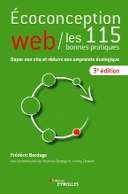

- Internet pas si virtuel que cela !
- Consommation
- Eau
- Électricité
- Production
- Gaz à effet de serre
- Déchets
- Consommation
Référentiel

Écoconception Web / les 115 bonnes pratiques – Frédéric Bordage